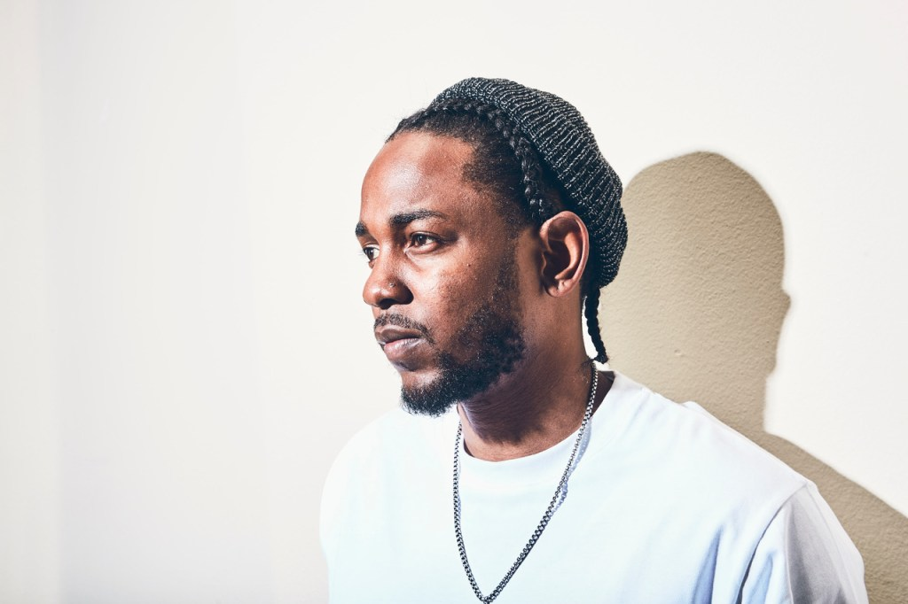

article 1
Artist 1: Drake
Drake, born Aubrey Graham in Toronto, Canada, is known for blending rap and R&B, creating a unique flow that reshaped modern hip-hop. He gained fame with So Far Gone (2009) and has since become one of the world's biggest artists, known for hits like “Hotline Bling,” “God's Plan,” and “One Dance.” His music often talks about fame, relationships, and success, and he's known for his versatility across genres.
article 2
Kendrick Image

Kendrick Lamar
Artist 2: Kendrick Lamar
Kendrick Lamar, from Compton, California, is popularly known for his storytelling, lyricism, and social commentary. Albums like good kid, m.A.A.d city (2012), To Pimp a Butterfly (2015), and DAMN. (2017) earned great applause for tackling themes of race, identity, and systemic injustice. He's considered one of the most important voices in modern rap and even won a Pulitzer Prize for his album "DAMN."
article 3
Artist 3: J. Cole
J. Cole, born Jermaine Lamarr Cole in North Carolina, is known for his thought provoking lyrics and conscious storytelling. After signing with Jay-Z's Roc Nation, he released popular albums like 2014 Forest Hills Drive and KOD, discussing themes such as self-growth, fame, and social issues. J. Cole is respected for producing most of his own music and while delivering thoughtful, relatable messages.